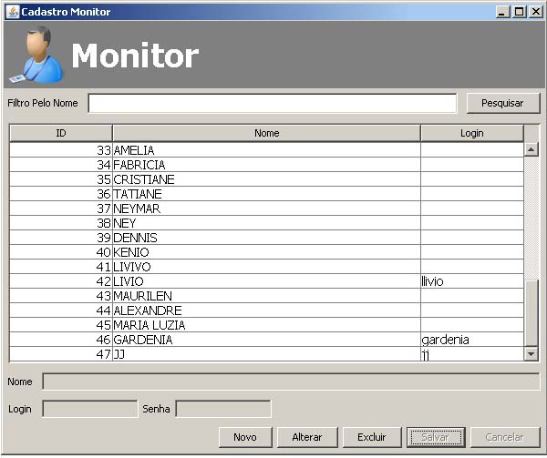

|
Cadastro de Monitor |
|
|
|
Iniciaremos o cadastro do Monitor.
A tela abaixo é o cadastra o monitor, o cadastro é simples basta clicar no botão novo e digitar o nome login e senha do Monitor e depois clicar em salvar. O Monitor é o usuario que efetua login no sistema por isso é preciso cadastrar login e senha para o mesmo.

O monitor não poderar ser excluido caso ele possua registro de video pois a um relacionamento
entre as tabelas Registrar Video e Monitor ocasionando um erro na exclusão.
O monitor não sera selecionado na hora do registro do video, o sistema buscara
automatico o monitor no seu login de acesso